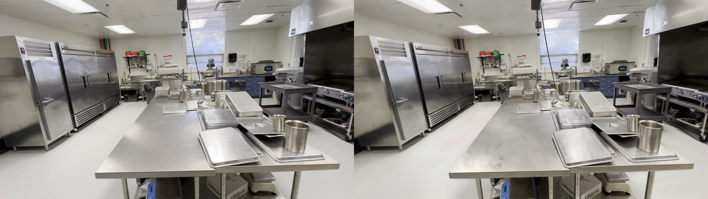
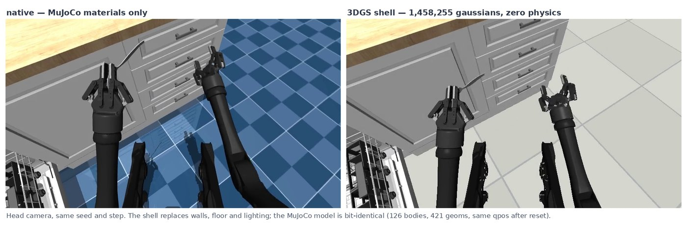

Project · AMD @ NeurIPS 2026
World Labs Atlas for Robotics: One Scene, Endless Worlds To Train A VLA
A real kitchen is captured in photos and rebuilt as 1.46 million 3D Gaussians. World Labs Atlas then edits that scene, so one capture becomes many variations. Robot demonstrations are re-rendered in each variation as new training data for a vision-language-action (VLA) policy, and the policy is tested in closed loop. Reconstruction, rendering, training and testing run on AMD Radeon™ PRO GPUs with ROCm™.
How it works
From photos of a room to a tested robot policy
The captured scene supplies what the robot sees, Atlas edits it, and the physics simulator decides how things move. Keeping appearance and physics apart is what lets the scene be edited without touching the robot setup.
Photos to 3D Gaussians
A commercial kitchen from the DL3DV-10K dataset is reconstructed with 3D Gaussian Splatting on one Radeon™ PRO W7900D: 15,000 steps, 1,458,354 Gaussians, 27.9 dB PSNR on a held-out photo.
Change the look
World Labs Relight, part of the Atlas-based Marble tools, re-lights the captured Gaussians. The scene is edited, not generated: geometry stays untouched, so alignment and calibration carry over to every look.
Replay the demonstrations
Thirty expert demonstrations are replayed in MuJoCo. The robot, counter and dishwasher are simulated; the Gaussians are drawn behind them as the room. Only the three camera streams change.
Fine-tune, then close the loop
Dexmal's DM0.5 VLA gets a LoRA fine-tune of 1,000 steps on three GPUs. Each model then runs the task on 200 fixed seeds, with the policy acting on rendered images at 20 Hz.

Edit the scene
One capture, five looks
The captured kitchen plus golden hour, night shift and lamp are used for training. Neon is kept out of training and used only to test the policy.

Lighting edits on this page are real World Labs Relight outputs. The texture edit pictured on the NeurIPS flyer is a concept image of where the demo is heading, and is labelled as such there.
Results
Training in the deployment scene is what moves the number
Task: BiGym DishwasherUnloadCutleryLong, a two-arm robot unloading cutlery from a dishwasher rack into a drawer. Every row uses the same 200 seeds, the same recipe and the captured lighting.
Closed-loop success in the 3DGS kitchen, 200 episodes per model, measured on Radeon™ AI PRO R9700. Whiskers are Wilson 95% intervals. The 3DGS-kitchen LoRA beats the simulator-frame LoRA by 17 points (paired p = 0.0001) and the four-look LoRA by 11.5 points (p = 0.003).
Match the scene first
Fine-tuning on the default simulator look gives no gain at all: 53/200, the same as the released model. The same demonstrations rendered in the target scene give 43.5%.
More lighting did not add more
Training on four looks scores 32%. In the held-out neon look it scores 31/100, level with the released model; the single-scene model scores 36/100. The room fills about 1% of the head camera, so relighting changes little of what the policy sees.
It holds on a second GPU family
The recipe was repeated from scratch on Radeon™ PRO W7900D and all three models were scored on both machines. Both fine-tunes beat the released model on both.
| Evaluated on Radeon™ AI PRO R9700 | Evaluated on Radeon™ PRO W7900D | |
|---|---|---|
| Released DM0.5 | 53/200 26.5% | 54/200 27.0% |
| 3DGS-kitchen LoRA, trained on R9700 | 87/200 43.5% | 88/200 44.0% |
| 3DGS-kitchen LoRA, trained on W7900D | 77/200 38.5% | 82/200 41.0% |
200 seeds per cell, 1,200 episodes in total. Paired McNemar tests against the released model on the same machine: p = 0.0002 and 0.012 on R9700, p = 0.0004 and 0.005 on W7900D. The two fine-tunes do not differ from each other (p = 0.20 and 0.50). Totals agree across machines to within 2.5 points, although 18–26% of individual seeds change outcome when the machine changes.
Built with
Models and data
World Labs Atlas
World Labs' world model. Here it does one job: it edits a scene that was captured for real. Its Relight tool produced the four edited looks of the kitchen; the kitchen itself is not generated.
worldlabs.ai/blog/atlas → VLA policyDexmal DM0.5
A vision-language-action model. It takes three camera images, the robot state and one instruction, and predicts chunks of 16 actions. The released checkpoint is the starting point.
huggingface.co/Dexmal/DM05 → Scene dataDL3DV-10K
The dataset of real-world scenes the kitchen comes from. It is licensed CC BY-NC 4.0, for non-commercial research use.
huggingface.co/datasets/DL3DV →Stack
Runs on Radeon
| GPUs | AMD Radeon™ PRO W7900D (48 GB): reconstruction on one card, fine-tuning on three, one evaluation process per card. Repeated on AMD Radeon™ AI PRO R9700 (32 GB). |
|---|---|
| Software | ROCm™, PyTorch, OpenSplat for reconstruction, gsplat 1.4.0 built from source for rendering, MuJoCo for physics |
| Policy | Dexmal DM0.5, LoRA rank 32, 1,000 steps, effective batch 48 |
| Task | BiGym DishwasherUnloadCutleryLong, 30 expert demonstrations, three cameras at 20 Hz |
| Scene | DL3DV-10K commercial kitchen, 1,458,354 Gaussians. The Gaussians are appearance only; they take no part in collisions. |
Questions, collaboration, or a demo
Charles Yang, AMD.